欢迎使用 ECAF
一个简化软件开发流程，提高研发生产效率，构建高可用分布式系统的微服务敏捷开发框架
它能帮助我们解决什么问题
快速迭代
可配置化及可定制化
半自动化的开发过程
简化软件研发流程
解放研发人员的工作
专注于业务过程的开发
提升研发生产效率
提高软件交付质量
用户或合作伙伴简单培训即可上手
ECAF 的技术选型
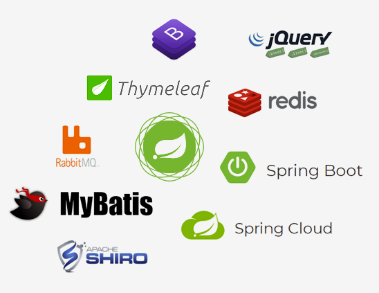
后端：
Spring Boot
Spring Cloud
MyBatis
RabbitMq
Redis
Shiro
Thymeleaf
前端：
Bootstrap
Jquery
开发阶段中的 ECAF 开发模式
开发人员仅需关注
ECAF 表单引擎
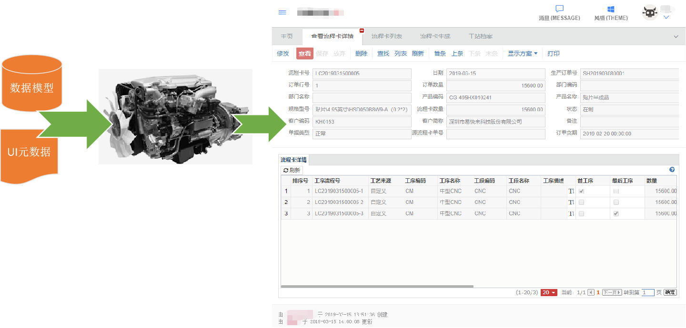
引擎会根据开发者定义的数据模型结合 UI 元数据生成标准的 html 界面；界面中的所有元素皆可配置，无需更改代码
ECAF 数据列表引擎
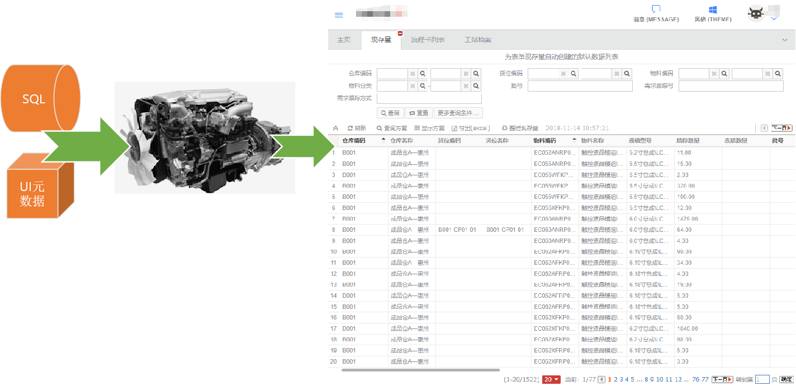
引擎会根据开发者定义的数据模型自动生成数据列表，界面中的所有元素皆可配置，无需更改代码
ECAF 的微服务架构
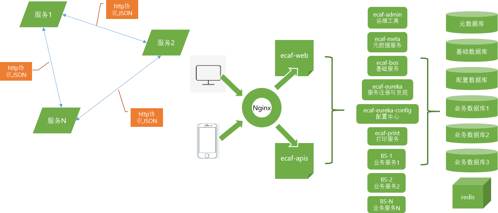
ECAF 数据建模
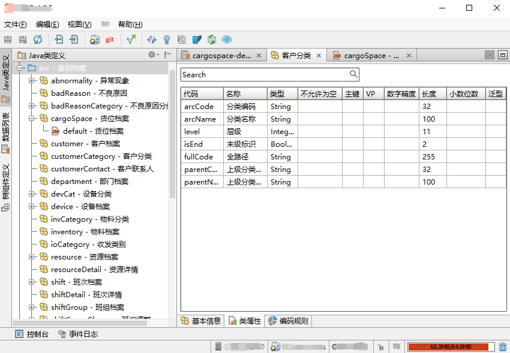
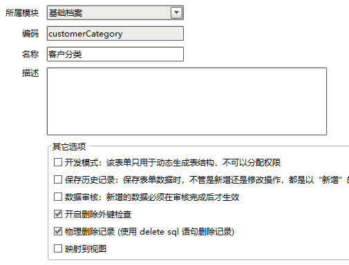
ECAF 表单元数据
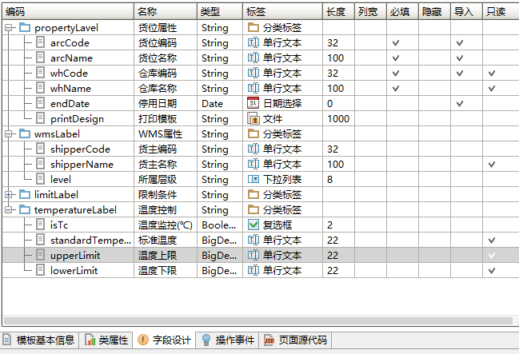
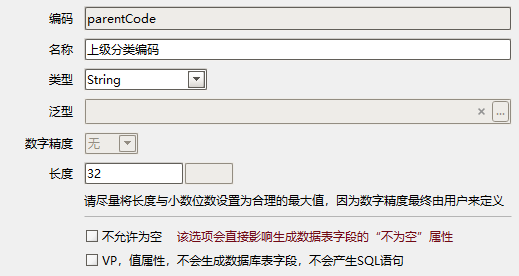
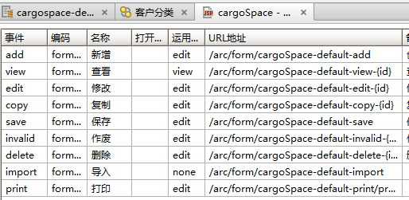
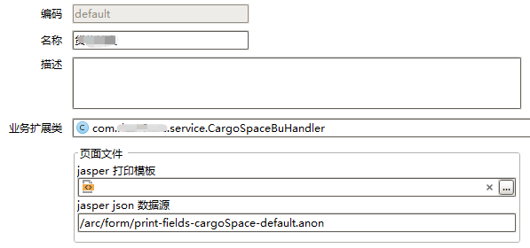
ECAF 数据列表元数据
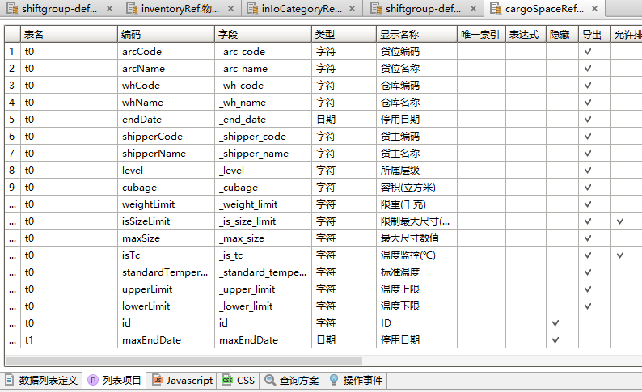
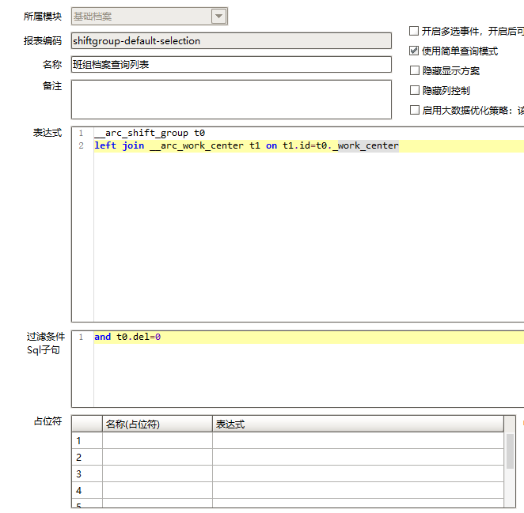
ECAF 菜单定制
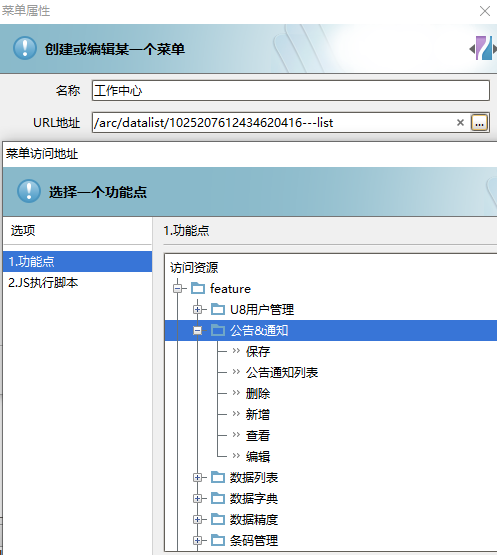
幻灯片 12
ECAF 权限控制
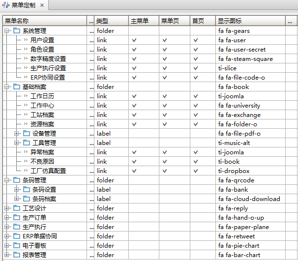
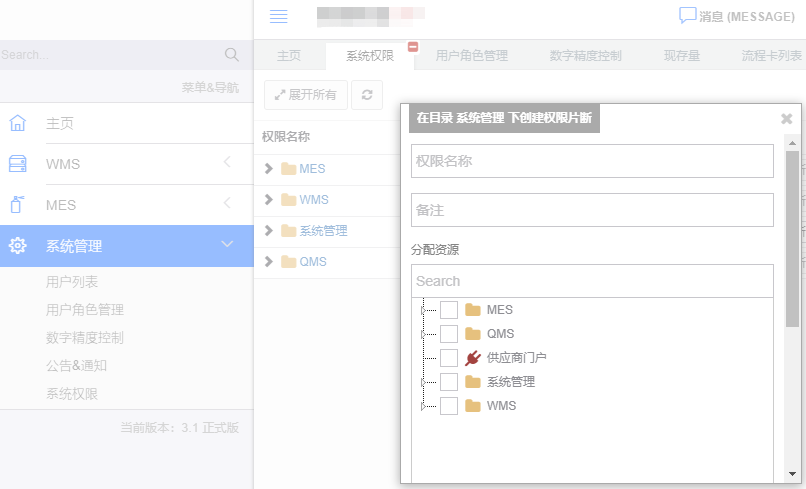
ECAF 数字精度定义
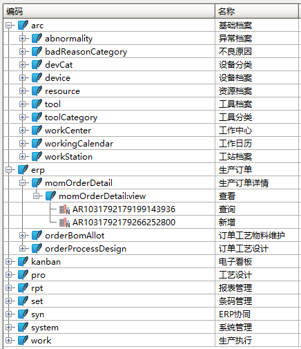
ECAF 多语言设置
ECAF 运维工具
1、数据中心
2、运行环境
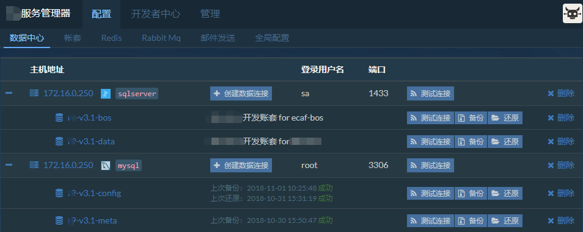
3、Redis 及其它组件配置
4、微服务应用程序
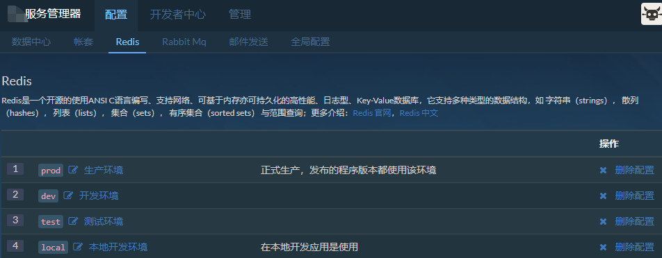
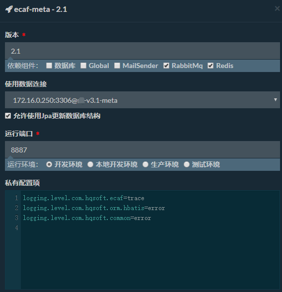
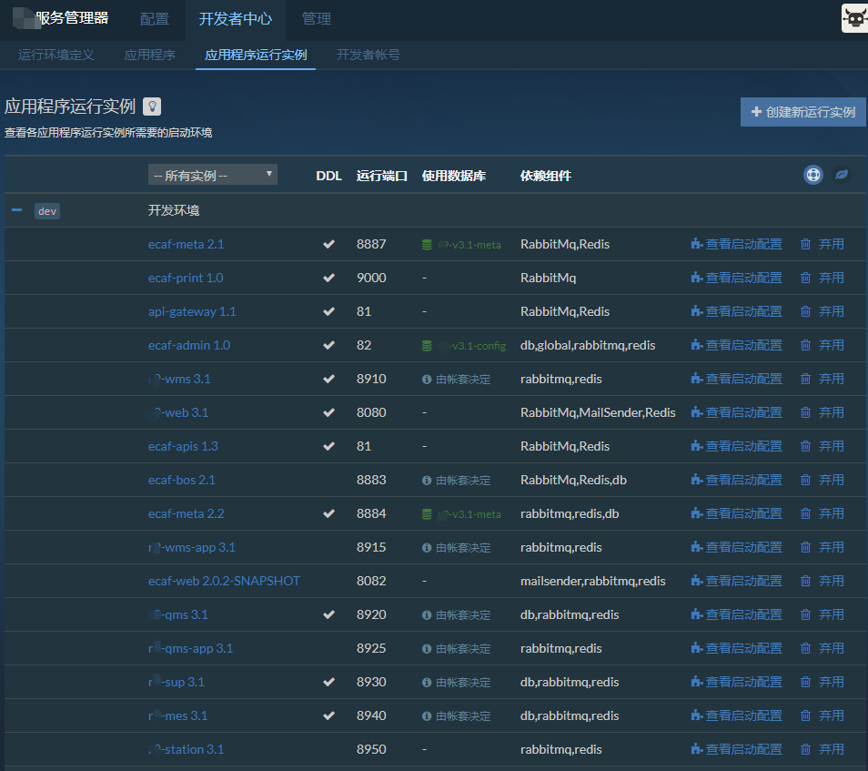
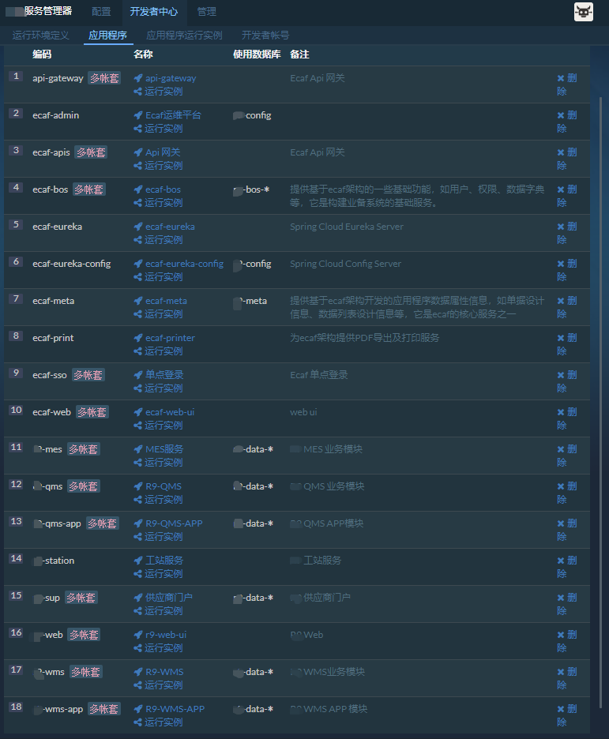
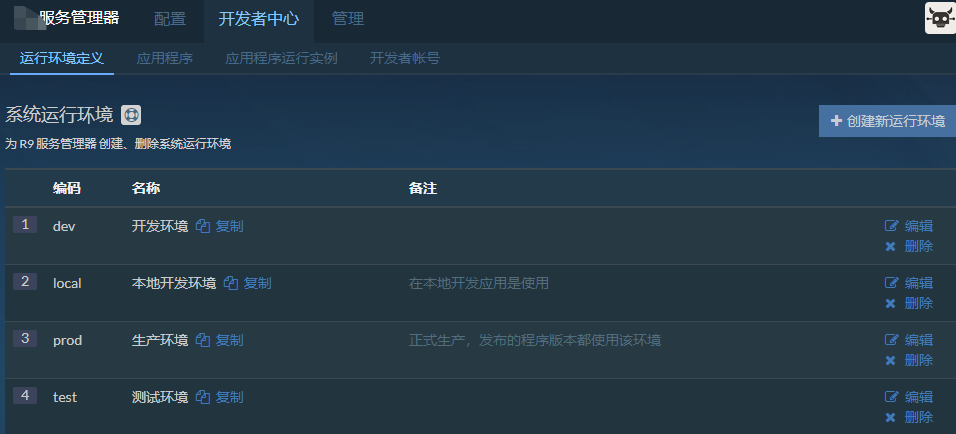
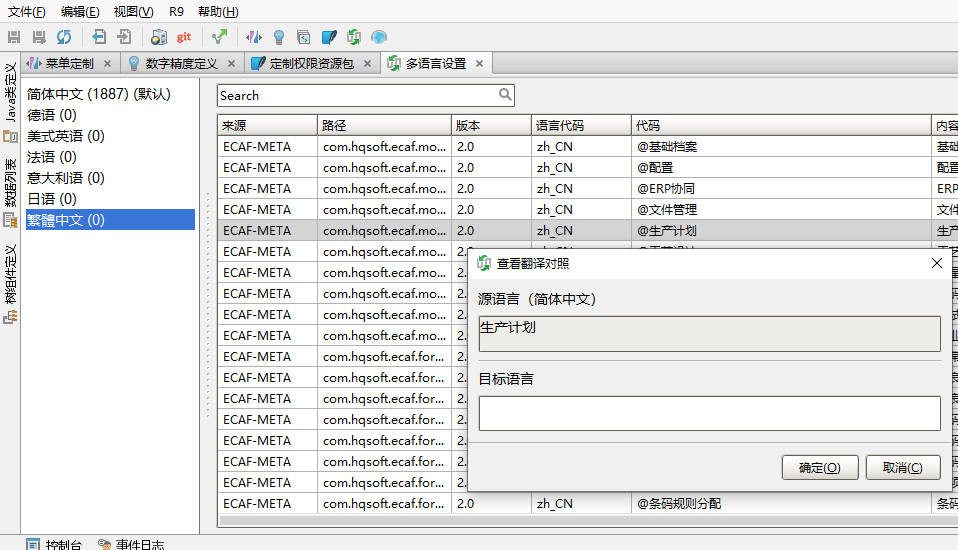
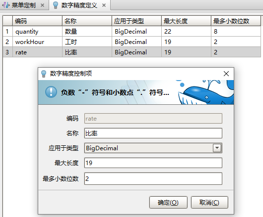
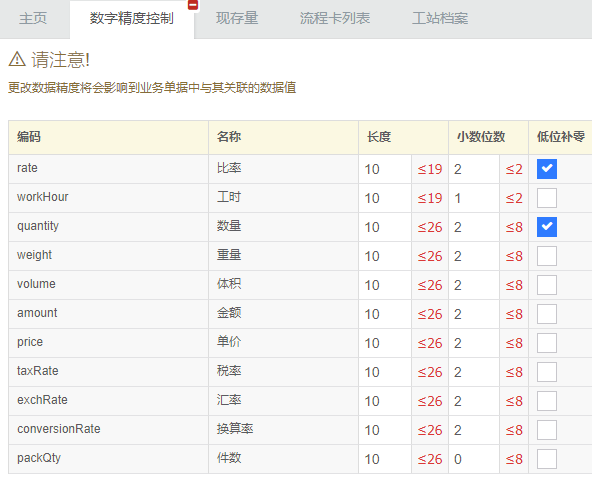
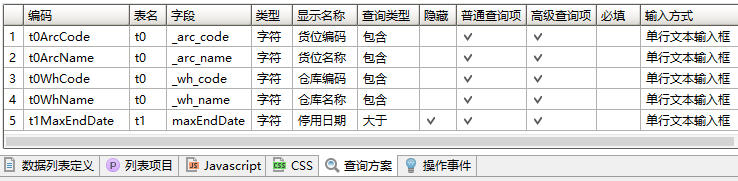